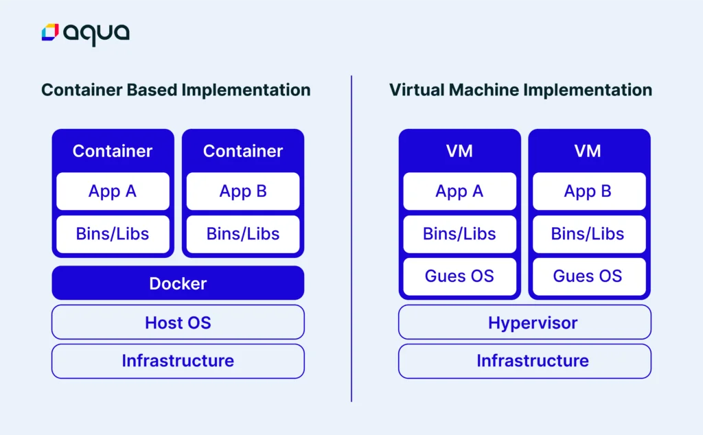
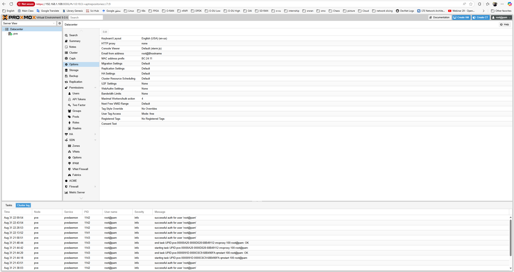
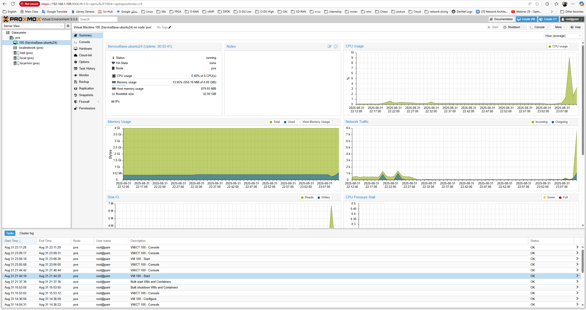

Virtualization
This page will contain information about virtualization in computing systems.
- Virtualization
- Definitions
- Virtual Machines
Definitions
Virtualization is the process of creating an abstract layer between hardware resources and the software that uses them. Instead of applications directly accessing physical hardware, a virtualization layer (hypervisor or container runtime) allows multiple isolated environments to share the same physical system efficiently. Using it lets us fully utilize hardware capabilities and makes disaster recovery easier. However, it introduces some security risks and software licensing costs.
Types of Virtualization
-
Hardware Virtualization: Full virtual machines (VMs) with dedicated virtual CPUs, memory, disks, and NICs.
-
Operating System Virtualization: Containers running on a shared kernel while remaining isolated from each other (e.g., Docker, Podman, LXC).
-
Storage Virtualization: Abstracting storage resources into pools for flexible provisioning.
-
Network Virtualization: Overlay networks and SDN (Software-Defined Networking) to decouple network services from hardware.
Hypervisors
-
Type 1 (Bare-metal): Run directly on the hardware (e.g.,
VMware ESXi,Proxmox VE,Xen,Hyper-V). -
Type 2 (Hosted): Run on top of a host operating system (e.g.,
VirtualBox,VMware Workstation).
Containers vs Virtual Machines
-
VMs: Each VM runs its own guest OS, providing full isolation and flexibility but with higher overhead.
-
Containers: Share the host OS kernel, lightweight and faster, ideal for microservices and DevOps workflows.
 Virtualization types: Container-based and VM-based -- Reference: aquasec.com
Scaling in Virtualized Environments
-
Scale Up (Vertical Scaling): Adding more resources (CPU, RAM, storage) to a single VM or container. Example: resizing a VM disk using
fdisk,vgextend,lvextend, andresizefs. -
Scale Out (Horizontal Scaling): Adding more VMs or containers to distribute workload across multiple nodes. Common in
Kubernetesor cloud-native architectures.
Virtualization Tools and Ecosystem
Hypervisors: Proxmox VE, VMware ESXi, KVM, Xen.
Container Runtimes: Docker, Podman, containerd.
DevOps & Orchestration: Terraform (infrastructure as code), Ansible (automation), Kubernetes (orchestration), GitLab CI, Nexus (artifact repository).
References and Further Readings
- Virtualization in Cloud Computing and Types
- Virtualization - TechTarget
- Containerization vs. Virtualization: Key Differences and Use Cases
Virtual Machines
Virtualization on a host OS is old hat and not very exciting anymore. My first stop was VMware ESXi, but hardware limitations made it frustrating. That’s when I shifted to Proxmox VE, and it clicked immediately. Open-source, lightweight, community-driven — and it just worked with my old hardware. So let's begin with installing Proxmox.
Install Proxmox
Download files
Proxmox VE ISO: from the official Proxmox site (Downloads → ISO Images).
Rufus (to make a USB installer): download from rufus.ie (portable EXE, no install needed).
Create a bootable USB with Rufus (on Windows)
Insert an 8 GB+ USB stick (it will be erased).
Open Rufus → Device: your USB.
Boot selection: pick the Proxmox ISO you downloaded.
Partition scheme:
- MBR if the target PC boots in Legacy BIOS.
- GPT if the PC boots in UEFI.
Leave File system = FAT32, Cluster size = default.
Click Start → OK to write in ISO mode.
BIOS/UEFI setup on the old PC
Consider these points:
- Enable Intel VT-x/AMD-V (virtualization).
- (If present) enable VT-d/IOMMU.
- Disable Secure Boot (older hardware may not have this).
- Set USB as the first boot device (or use the one-time boot menu key).
Install Proxmox VE
First considerations:
- Boot from the USB → choose Install Proxmox VE (Graphical).
- License: accept.
- Target disk: pick your SSD (fastest).
- File system: choose LVM/ext4 (recommended for 16 GB RAM). Avoid ZFS on low RAM.
- Country/Time/Keyboard: set yours.
- Password & Email: set root password (this is for Proxmox login).
Management network:
- Pick your NIC (e.g., enp3s0/eth0).
- Set a Static IP if possible (recommended), e.g.
- IP: 192.168.1.100
- Netmask: 255.255.255.0
- Gateway: 192.168.1.1 (your router)
- DNS: your router or 1.1.1.1
Install → Reboot → remove USB.
First login (Web UI)
On another machine on the same LAN, open:
https://<your-proxmox-node-ip>:8006 (e.g., https://192.168.1.100:8006)
Ignore the certificate warning (self-signed).
Login: root + the password you set.
 Proxmox First Login on the Web UI
Post-install housekeeping (no subscription repo)
By default, Proxmox points to the enterprise repo (requires a subscription). Switch to the free repo:
Open Shell in the Web UI (top-right) or SSH to the node, then:
- Disable the enterprise repo:
Go to Web UI, from the left panel, choose node (here pve) -> Updates -> Repositories. Select pve-enterprise-sources and ceph-sources, and disable them.
- Enable the no-subscription repo (Proxmox VE 8.x on Debian 13 trixie):
Open a shell, editor /etc/apt/sources.lists.d/pve-no-subscription and paste following content:
After reboot, you’re on the latest Proxmox VE 8 (free/no-subscription).
Storage layout (use multiple disks)
local-lvm (thin): default place for VM disks (lives on the SSD—fast).
local: for ISO images & backups (also on SSD by default).
To add any other drive for VM disks/ISO/backups:
Datacenter → <node> → Disks → Directory → Create
Point it to your drive (e.g., /mnt/hdd1), format ext4, give it an ID (e.g., hdd-dir).
Then go to Datacenter → Storage → Add → Directory, pick that path and enable Disk image and/or ISO image as you like.
Upload a Linux ISO and create the first VM (Ubuntu example)
Upload ISO
Datacenter → <node> → local (Storage) → ISO Images → Upload → pick ubuntu-XX.YY-server.iso.
Create VM
Create VM (top-right).
- General: Name it (e.g., ubuntu01).
- OS: Select the uploaded ISO.
- System: Keep defaults (BIOS SeaBIOS is fine for old PCs).
- Hard Disk: SCSI, on local-lvm, size e.g., 40 GB.
- CPU: Host type, 2 cores.
- Memory: 4096 MB (4 GB).
- Network: Bridge vmbr0; Model VirtIO (paravirtualized).
Before first boot: VM → Options → QEMU Guest Agent → Enable = Yes.
Start the VM: Console → install Ubuntu (tick OpenSSH server during install).
Inside the VM after first boot:
Now you can SSH in from your LAN:
(Find the VM’s IP in Proxmox summary once the guest agent isactive on the VM config and is running (apt-get install qemu-guest-agent) in the VM OS, or simply via ip a in the VM shell.)

First VM Stats in Proxmox
Scale Up The Storage
First of all, add a new disk from VM hardware panel. After that you can see this on the lsblk command output. if its name is /dev/sdb, use fdisk /dev/sdb command to format this. you have to press n to create new filesystem, p for primary, and some enter keys to confirm default values. after that, you can use t to change type of it to 8e i.e. linux-lvm.
You can think of LVM as "dynamic partitions": it lets you create, resize, and delete logical volumes from the command line while Linux is running, so the kernel immediately recognizes the changes without a reboot.
LVM lets you merge physical volumes into volume groups and then create, resize, or delete logical volumes as flexible partitions.
So the structure is made up with 3 entity:
- Physical Volumes (PV): physical block devices (or device-mapper devices) with an LVM header - the raw building blocks.
- Volume Groups (VG): pools that combine physical volumes into a single logical storage pool.
- Logical Volumes (LV): flexible “partitions” carved from a volume group that users and applications use.
to read new partitions use sudo partprobe, then you can create a PV by prompting sudo pvcreate /dev/sdb1. To extend ubuntu-vg Volume Group and lv-0 Logical Volume:
You’re all set - once the filesystem resize completes and you verify the new size with
df -h, the extra space from the added disk is available to the system and applications immediately. This lets you grow storage on the fly without downtime, and you can repeat the same PV → VG → LV steps later if you add more disks or need to reallocate space.